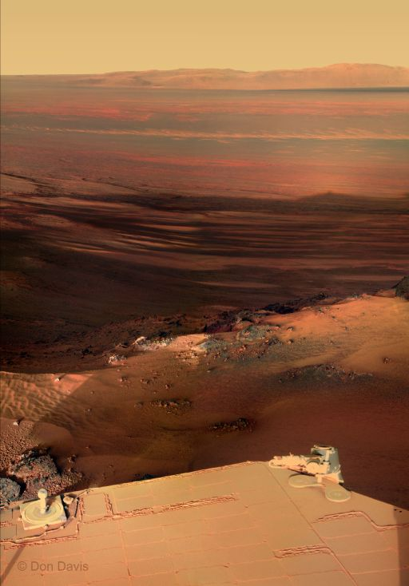

Code or Die
Welcome to my home page!
Be excellent to one another.
Appearance:
 This is me.
This is me.
And party on dudes!
From my Flickr:
 Purple sunset.
Purple sunset.
Sunset on Mars:

Near sunset on sol 2847 (January 27, 2012), Opportunity gazed backward to the east-southeast and the distant line of peaks that mark the far rim of Endeavour crater.
NASA / JPL / Cornell / color mosaic © Don Davis